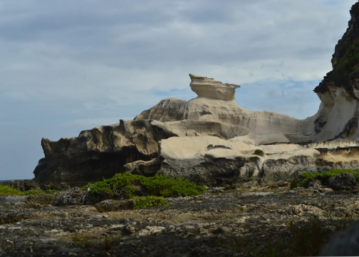

Top-rated & Must see attractions



Kapurpurawan Rock Formation
Location: Burgos, Ilocos Norte
"If you want to empress your friends, these rock formations are the best background in your photos!"
Standing beautifully in the coast of the town of Burgos, fronting the roaring waves of Bangui Bay, Kapurpurawan
Rock Formation was formed thousands (or even millions) of years ago by accumulation of particles deposited to
the
shore by the forces of sea waves and wind, with the aid of gravity and time. It is a very long process known
in
science as sedimentation.
The name of this formation is derived from it's characteristically white color.
In ilocano, the word puraw means white.
The rock also looks like a large dragon
watching over the entire coast. Once you reach it, you'll be rewarded with the
natural beauty of the erosion created
by the years and years of crashing ocean waves.
The Sinking Bell Tower
Location: Laoag City
"One of the main landmarks of Laoag and within walking distance
of St Williams Cathedral - so both sites can be conveniently visited at the same time."
If Italy has its leaning tower of Pisa, Laoag City has its own local version.
This edifice is one of the tallest bell towers in the
country and its located
in the heart of the city. As of today, it stands at 45m tall.
The bell tower is one of the landmarks of Spanish colony in the Philippines. The tower has earned its
sinking reputation because it is so heavy and it was built on sandy foundations that it has been
consistently sinking into the ground.
One story said that when the bell tower was newly built, a person
on horseback could enter the tower, but today a person with normal
height has to bend first just to pass the entrance.
Quite interesting :) But despite of this, the bell tower still continues its purpose of ringing the bell to call the
Catholic brethren to mass.
La Paz Sand Dunes
Location: Laoag City, Ilocos Norte
"If you're not afraid of heights and of not being in control, this is for you. You'll ride a 4x4 truck that will take you through the sand dunes."
The sand dunes of Ilocos were created by the interaction of the wind, sea, and river that together cause erosion and deposition. The size of
the dunes varies depending on a number of factors, including the currents, weather conditions,
nature of winds, amount
of sediment, and type of vegetation in the area.
This sand dunes are accessible by tricycle or jeepney. They're only 15 minutes away from the city proper.
Due to its desert environment, it is a popular location for shooting films for both local and international
film makers alike. Notable local films
include HIMALA and PANDAY, and the international
films are MAD MAX and BORN ON THE FOURTH OF JULY.
Fort Ilocandia Resort Hotel
Location: Brgy. Calayab, Laoag City
The Fort Ilocandia Resort Hotel is quite a serene place to stay a holiday in Ilocos. Its expansive quiet surroundings, solid buildings and
interiors, quaint brick spanish architecture, clean grounds and beautiful gardens highlighted by bright bougenvillas provide a relaxing stay.
The Fort Ilocandia Resort and Casino is a first class hotel in Ilocos Norte. Its design was
inspired by spanish colonial architecture. The main building houses a lobby, the casino,
the arcades, the shopping arcade, and restaurants. The views are fantastic, and it was majestic in the sense that the compound where the
hotel is located was sprawling.
The decor is a step up from other hotels: it exuded Old World ambiance, a far cry from the cookie cutter
interiors of hotel chains. It had quality rugs on the floor and hardwood furniture.
Malacanang of the North
Location: Near Paoay Lake
"The palace has exhibits of the life of the former president Ferdinand Marcos, along with his achievements and some future (unimplemented) plans."
Malacanang of the North was built as the officail residence of the late President Marcos in Ilocos Norte.
It is a two-story building located near the legendary Paoay Lake. The residence is complete with bedrooms,
a dining area, a kitchen, an office, a spacious ballroom on the second floor,
and even had an Olympic-sized swimming pool.
With its sprawling expanse, this imposing mansion is intricately designed and has a mix of Spanish and Ilocano architecture. The result is quite
majestic, and one of its finest features is the magnificent view, with the house looking out over well tended gardens and the beautiful Paoay Lake.
Paoay Church
Location: Paoay, Ilocos Norte
"One of the famous tourist destination and a world heritage site standing right in the heart of Paoay,
the magnificent San Agustin Church, or also known as the Paoay Church."
Paoay Church is one of the oldest churches in the Philippines, having completed its construction in 1710.
It was declared as a National Cultural Treasure by the Philippine government in 1973 and was then included in
the list of UNESCO World Heritage Sites collective group of Baroque Churches of the Philippines in 1993.
What makes Paoay Church outstanding from other well-known churches around the country is its impressive
pyramid-like structure considered as a primary example of the earthquake baroque style of architecture
characterized by its thick walls made from coral stones and bricks.
Its facade is reminiscent of Spanish, Chinese, and Filipino influences with its gothic, baroque,
and oriental design. Inside the church is the gold plated altar with a figure of its patron Saint
Agustine as a centerpiece.
Playa Tropical Resort
Location: Currimao, Ilocos Norte
Playa Tropical Resort Hotel is a high-class resort in Ilocos Norte. It is fringed by glistening white-sand beaches
and crystalline waters of the South China Sea and masterfully blends Balinese architecture with world-renowned Filipino hospitality.
The hotel offers luxury living and privacy and their staff takes pleasure in meeting your needs 'round the clock. Their designed rooms,
suites, and casas are a superb example of privacy, elegance, and comfort. They also render exclusive spa and give professional
services through their personal therapists who help you to rejuvenate, relax, and have a worthwhile vacation.
A Balinese inspired beachside hotel haven where one can enjoy stunning sunsets and a constant,
gentle ocean breeze, with a beach where the calm waves and fine sand reminds you of the
infinite wonders of the world.
It is aesthetically inspired by the intricate designs from Bali and infused with our Ilocano hospitality.
Your stay would be one of warm service, tranquility and fond memories.